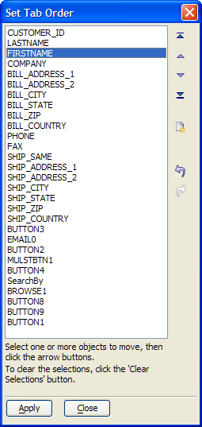

A5_Structured_TabOrder()
Syntax
A5_Structured_TabOrder( as P )
Argument | Description |
| A pointer to a form. |
Description
The A5_Structured_TabOrder() function displays the Set Tab Order dialog. This dialog allows you to reorganize the sequence of tab settings on a form.

Supported By
Alpha Five Version 8 and Above
Limitations
Desktop applications only.
Example
a5_structured_tabOrder(formname.this) |
See Also
Setting the Tab Order by Table